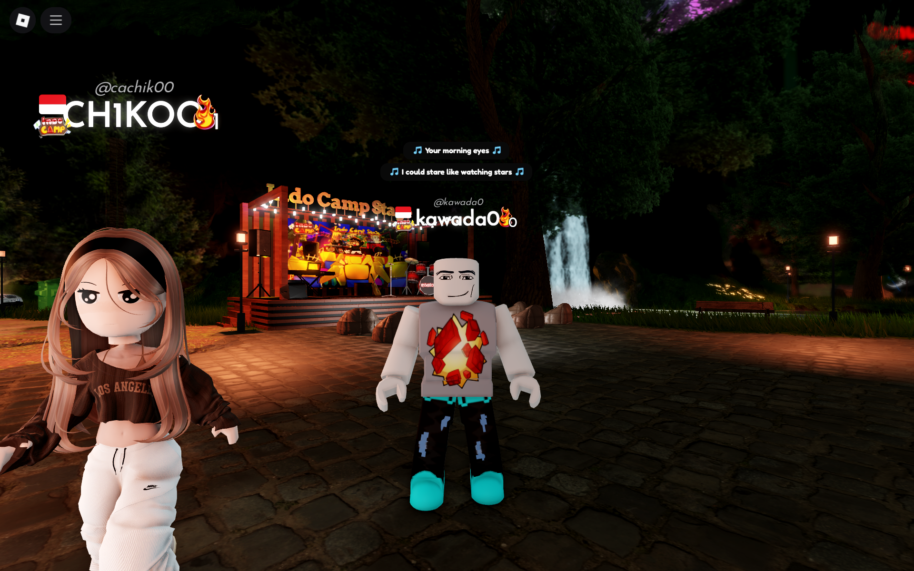

Gambar: Pemain asyik nongkrong dengan avatar unik di Roblox.
Roblox adalah semesta virtual tempat jutaan orang berkumpul, membuat, dan memainkan game ciptaan pengguna lain dengan avatar yang bisa dimodifikasi sekreatif mungkin.